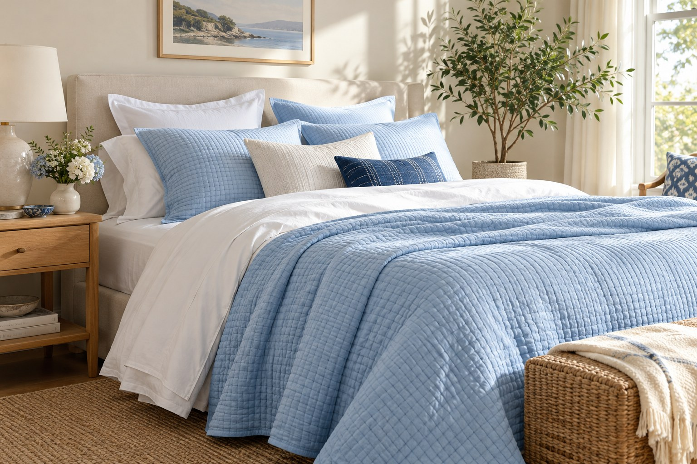

Yataq otağından başlayırıq
Yataq dəstləri, yastıqlar, yorğanlar, döşək qoruyucuları və yataq otağı aksessuarlarını vahid, rahat seçim məkanında birləşdiririk.
Kolleksiyalara bax ↗MELATONI · THE ART OF SLEEP
Melatoni yuxunu yalnız gecənin bir hissəsi deyil, evdə qayğı ilə qurulan şəxsi bir məkan kimi görür. Biz həmin məkanı yataq məhsulları və gündəlik rahatlıq detalları ilə tamamlayırıq.
Adımızın hekayəsini oxuyun“Melatoni” adı səslənişcə melatonini xatırladır — bədənin gecə-gündüz ritmində iştirak edən təbii hormon. “Melatonin” sözünün elmi tarixçəsi isə birbaşa “yuxu” demək deyil: adın “mela-” hissəsi melaninə, “-tonin” hissəsi serotonin adına bağlanır. Termin 1958-ci ildə piqment hüceyrələrini açan epifiz maddəsinin kəşfi zamanı işlədilib. Yəni ad əvvəlcə piqment tədqiqatlarından yaranıb; yuxu ilə əlaqəsi hormonun gecə-gündüz ritmindəki rolu ilə bağlıdır.
Melatoni isə ayrıca mağaza və brend adıdır. Biz onu gecənin sakit ritmini, günün sonunda özünə ayırdığın vaxtı və rahatlıq hissini xatırladan bir ad kimi seçmişik. Adımız sağlamlıq, müalicə və ya yuxusuzluğa çarə vədi deyil.
Mənbələr: NHLBI — bədən saatı və melatonin; American Physiological Society — adın melanin və serotoninlə əlaqəsi; Lerner və həmkarlarının 1958-ci il ilkin məqaləsi.
BİOLOJİ RİTM · EV RİTMİ
İşıq və qaranlıq bədənin daxili saatına gündəlik siqnallar verir. Axşam qaranlığında melatonin ifrazı artır; bu, bədənə gecə vaxtının gəldiyini bildirən proseslərdən biridir. Yuxunun keyfiyyəti isə tək bir maddədən asılı deyil — gündəlik rejim, işıq, sağlamlıq və şəxsi şərait də rol oynayır.
Biz bu elmi məlumatı məhsul vədinin yerinə qoymuruq. Ondan ilhamlanaraq yataq otağında daha rahat hiss edilən toxumalar, uyğun ölçülər və sakit atmosfer yaradan seçimlər təqdim etməyə çalışırıq.
Melatonin haqqında əlavə məlumat — NCCIH ↗Rahatlığı bir məhsula bağlamırıq. Seçimləri yataq otağının müxtəlif ehtiyaclarına uyğun bölür, məhsul haqqında vacib detalları aydın göstəririk.
Yataq dəstləri, yastıqlar, yorğanlar, döşək qoruyucuları və yataq otağı aksessuarlarını vahid, rahat seçim məkanında birləşdiririk.
Kolleksiyalara bax ↗Material, ölçü, qulluq və istifadə xüsusiyyətlərini məhsul səhifəsində göstəririk. Rəng və ölçü seçimi məhsuldan asılı olaraq dəyişə bilər.
Məhsulları araşdır ↗Uyğunluq və sifariş suallarını WhatsApp üzərindən dəqiqləşdirmək mümkündür. Məqsədimiz qərar verməyi daha rahat və şəffaf etməkdir.
Bizimlə danış ↗
MELATONI FƏLSƏFƏSİ
Yumşaqlıq, nəfəs alan tekstura, düzgün ölçü və asan qulluq — yataq otağında hər detalın öz yeri var. Melatoni bu seçimləri tələsmədən nəzərdən keçirmək, müqayisə etmək və öz evinizə uyğun olanı tapmaq üçün yaradılıb.
Bizim üçün yaxşı gecə bir məhsulun zəmanətli nəticəsi deyil. Özünüzü rahat hiss etdiyiniz məkanın, sizin gündəlik ritminizin və kiçik şəxsi vərdişlərinizin bir araya gəlməsidir.
Melatoni kolleksiyalarına baxMelatoni yataq və ev tekstili mağazasıdır. Biz melatonin əlavəsi, dərman və ya tibbi xidmət təqdim etmirik.